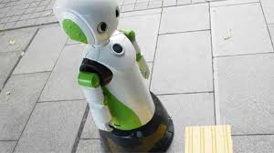

Musk quiere conectar al cerebro con una computadora, ¿para mejorar al ser humano?
Elon Musk presenta Neuralink, una interfaz que podría lograr una simbiosis con la inteligencia artificial al conectar el cerebro con una computadora. La discusión con Carlos Parra, profesor clínico del departamento de Sistemas de Información en la Universidad Internacional de la Florida.
Este robot en Japón te llamará la atención si no llevas mascarilla o no guardas la distancia sociar

Estas 5 extensiones para Microsoft Edge son peligrosas, y deberías desinstalarlas
Llega Kali Linux 2020.4 con 6 grandes novedades para hacking ético